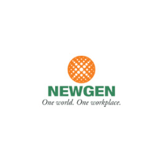

Work experience
Work, Internship and Volunteership
Data Scientist
Intern,
Voop.global
February 2020 - June 2020
● Mined the data from different sources such as twitter, Google trends, RSS Feeds,
Wikipedia
using various libraries and API
like Tweepy API, Wikipedia API;
built the knowledge base with the mined data
using
Python.
● Using the RSS Feeds , Covid19 Voop Dictionaries was created. For instance,
Unemployment,
Social connection are examples
of Covid19 Dictionary.
● In the GCP environment , the BERT Deep learning model was trained on the mined
data to
determine the background.
 Research Assistant, RMIT
University
Research Assistant, RMIT
University
September 2019 - March 2020
● Used pdfminer library in Python to extract the contents in the PDF.
● Topic modeling was performed to understand the topics discussed by the local council
in
Victoria.
● Sentimental analysis was done over the topics to segregate the positive and negative
sentiments.
● Doc2Vec Algorithm was built to understand the document from the local councils.
● Cosine similarities are calculated for the degree of sustainability among the
councils.
Software Engineer,
Newgen
Software Technologies
June 2017 - June 2018
● Identified patterns in the data and translated them into insights on integration
issues and
vulnerabilities with improved
solutions using Agile Methodology .
● Setting up the dev environment and deployment in the production environment
using
Java and Python .
● Interacted with the Stakeholders for better implementation and weekly progress.
● Versed in the complete Software life cycle from preliminary needs analysis to
enterprise-wide
deployment and support.
● Extensively worked on data extraction, loading data, Transformation, from various
sources like
Oracle and SQL Server.
Software Engineering
Intern,
LTI - Larsen & Toubro Infotech
December 2016 - February 2017
● Implemented graphical interface to manage VDIs(BOTS), which makes it much easier than
the
existing system
● Developed the interface using HTML, CSS, Javascript , and deployed in the dev
environment.
● Analyzed insights and reported, and documented.
Work experience
Work, Internship and Volunteership
Data
Scientist Intern,
Voop.global
Year : February 2020 - June 2020
● Mined the data from different sources such as twitter, Google trends, RSS Feeds,
Wikipedia
using various libraries and API
like Tweepy API, Wikipedia API;
built the knowledge base with the mined data
using
Python.
● Using the RSS Feeds , Covid19 Voop Dictionaries was created. For instance,
Unemployment,
Social connection are examples
of Covid19 Dictionary.
● In the GCP environment , the BERT Deep learning model was trained on the mined
data to
determine the background
Research Assistant,
RMIT
University
Year : September 2019 - March 2020
● Used pdfminer library in Python to extract the contents in the PDF.
● Topic modeling was performed to understand the topics discussed by the local council
in
Victoria.
● Sentimental analysis was done over the topics to segregate the positive and negative
sentiments.
● Doc2Vec Algorithm was built to understand the document from the local councils.
● Cosine similarities are calculated for the degree of sustainability among the
councils.
Software
Engineer, Newgen
Software Technologies
Year : June 2017 - June 2018
● Identified patterns in the data and translated them into insights on integration
issues and
vulnerabilities with improved
solutions using Agile Methodology .
● Setting up the dev environment and deployment in the production environment
using
Java and Python .
● Interacted with the Stakeholders for better implementation and weekly progress.
● Versed in the complete Software life cycle from preliminary needs analysis to
enterprise-wide
deployment and support.
● Extensively worked on data extraction, loading data, Transformation, from various
sources like
Oracle and SQL Server.
Software
Engineering Intern,
LTI - Larsen & Toubro Infotech
December 2016 - February 2017
● Implemented graphical interface to manage VDIs(BOTS), which makes it much easier than
the
existing system
● Developed the interface using HTML, CSS, Javascript , and deployed in the dev
environment.
● Analyzed insights and reported, and documented.